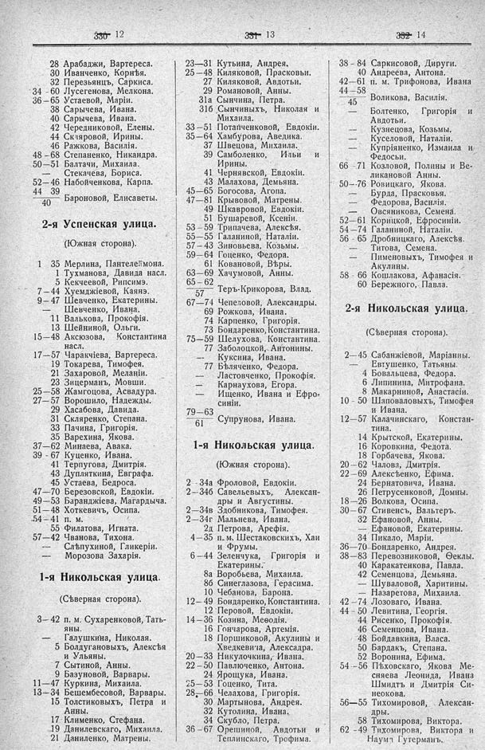

Лист источника 510
Скан

Распознанный текст
330 12
28 Арабаджи, Вартереса.
30 Иванченко, Корнѣя.
32 Перезьянцъ, Саркиса.
34–60 Лусегенова, Мелкона.
36–65 Устаевой, Маріи.
38 Сарычева, Ивана.
40 Сарычева, Ивана.
42 Чередниковой, Елены.
44 Скляровой, Ирины.
46 Ражкова, Василія.
48–68 Степаненко, Никандра.
50–51 Балтачи, Михаила.
— Стекачева, Бориса.
52–46 Набойченкова, Карпа.
44 39
—— Бароновой, Елисаветы.
40
2-я Успенская улица.
(Южная сторона).
1 35 Мерлина, Пантелеймона.
1 Тухманова, Давида насл.
5 Кекчеевой, Рипсимэ.
7–44 Хуемджіевой, Каянэ.
9–47 Шевченко, Екатерины.
— Шевченко, Ивана.
11 Валькова, Прокофія.
13 Шейниной, Ольги.
15–48 Аксюзова, Константина
насл.
17–57 Чаракчіева, Вартереса.
19 Токарева, Тимофея.
21 Захаровой, Меланіи.
23 Зицерманъ, Мовши.
25–58 Жамгоцова, Асвадура.
27–57 Ворошило, Надежды.
29 Хасабова, Давида.
31 Скляренко, Степана.
33 Пачина, Григорія.
35 Варехина, Якова.
37–62 Минаева, Авака.
39 - 67 Куценко, Ивана.
41 Терпугова, Дмитрія.
43 Дупляткина, Евграфа.
45 Устаева, Бедроса.
47–70 Березовской, Евдокіи.
49–53 Баранджіева, Магардыча.
51–48 Хоткевичъ, Осипа.
.54–41 п. м.
55 Филатова, Игната.
57–42 Чванова, Тихона.
— Слѣпухиной, Гликеріи.
— Морозова Захарія.
1-я Никольская улица.
(Сѣверная сторона).
3–42 п. м. Сухаренковой, Тать-
яны.
— Галушкина, Николая.
5 Болдугановыхъ, Алексѣя
и Ульяны.
7 Сытиной, Анны.
9 Базуновой, Варвары.
11–47 Куркина, Михаила.
13–34 Бешембесовой, Варвары.
15 Толстиковыхъ, Петра и
Анны.
17 Клименко, Стефана.
19 Данилевскаго, Михаила.
21 Даниленко, Матрены.
331 13
23–31 Кутьина, Андрея.
25–48 Киляковой, Прасковьи.
27 Киляковой, Авдотьи.
29 Романовой, Анны.
31а Сынчина, Петра.
31б Сынчиныхъ, Николая и
Михаила.
33–51 Потапченковой, Евдокіи.
35–64 Хамбурова, Аведика.
37 Швецова, Михаила.
39 Самболенко, Ильи и
Ирины.
41 Чернявской, Евдокіи.
43 Малахова, Демьяна.
45–65 Богосова, Агопа.
47–81 Крывовой, Матрены.
49 Шкавровой, Евдокіи.
51 Бушаревой, Ксеніи.
53–59 Трипачева, Алексѣя.
55–55 Галаниной, Наталіи.
57–43 Зиновьева, Козьмы.
59–64 Гощенко, Федора.
61 Ковановой, Вѣры.
63–69 Хачумовой, Анны.
65–62
—— Теръ-Крикорова, Влад.
57
67–74 Чепеловой, Александры.
69 Рожкова, Ивана.
74 Карпенко, Григорія.
73 Бондаренко, Константина.
75–59 Шелухова, Константина.
77 Заболоцкой, Антонины.
-- Куксина, Ивана.
77 Бѣляченко, Федора.
— Ластовченко, Прокофія.
— Карнаухова, Егора.
— Ищенко, Ивана и Ефро-
синіи.
79–63
—— Супрунова, Ивана.
61
1-я Никольская улица.
(Южная сторона).
2–34а Фроловой, Евдокіи.
2–34б Савельевыхъ, Алексан-
дры и Августины.
2–34в Здобникова, Тимофея.
2–34г Мальнева, Ивана.
2д Петрова, Арефія.
4–35 п. м. Шестаковскихъ, Хаи
и Фрумы.
6–44 Зеленчука, Григорія и
Екатерины.
8а Воробьева, Михаила.
8б Синеглазова, Герасима.
10 Чебанова, Барона.
12– 49 Бондаренко, Константина.
12 Перовой, Евдокіи.
14–36 Козина, Меѳодія.
16 Гончарова, Артемія.
18 Поршиковой, Акулины и
Хведкевича, Алексадра.
20–33 Никулочкина, Ивана.
22–50 Павлюченко, Антона.
24 Ярощука, Ивана.
25–53 Гоценко, Тита.
28–66 Челахова, Григорія.
30 Мартынова, Андрея.
32 Кутолина, Ивана.
34 Скубло, Петра.
36–67 Орешиной, Авдотьи и
Теплинскаго, Трофима.
332 14
38–84 Саркисовой, Дируги.
40 Андреева, Антона.
42–61 п. м. Трифонова, Ивана
44–58
—— Воликова, Василія.
45
— Болтенко, Григорія и
Авдотьи.
— Кузнецова, Козьмы.
— Куселовой, Наталіи.
— Купріяненко, Измаила и
Федосьи.
66–71 Козловой, Полины и Ве-
ликановой Анны.
50–76 Ровицкаго, Якова.
— Бурда, Прасковья.
— Федорова, Василія.
— Овсяникова, Семена.
52–61 Корицкой, Ефросиніи.
54–74 Галаниной, Наталіи.
56–65 Дробницкаго, Алексѣя.
Титова, Семена.
— Пименовыхъ, Тимофея и
Акулины.
58–66 Кошлакова, Афанасія.
60 Бережного, Павла.
2-я Никольская улица.
(Сѣверная сторона).
2–45 Сабанжіевой, Маріанны.
Евтушенко, Татьяны.
4 Бовальцева, Федора.
6 Липинина, Митрофана.
8 Макарниной, Анастасіи.
10–50 Шаповаловыхъ, Тимофея
и Ивана.
12–57 Калачинскаго, Констан-
тина.
14 Крытской, Екатерины.
16 Коровкина, Федота.
18 Горбачева, Якова.
20–62 Чалова, Дмитрія.
22–69 Алексѣенко, Ефима.
24 Бернатовича, Ивана.
26 Петрусенковой, Домны.
18–26 Волкова, Осипа.
30–67 Стивенсъ, Вальтеръ.
32 Ефановой, Анны.
— Ефановой, Екатерины.
34 Пикало, Маріи.
36–70 Бондаренко, Андрея.
38–83 Перевозниковой, Ѳеклы.
40 Каракатенкова, Павла.
42 Семенцова, Демьяна.
— Шуваловой, Харитины.
— Назаретова, Михаила.
42–74 Лозоваго, Ивана.
44–50 Левитина, Георгія.
44 Рисенко, Прокофія.
46 Семенцова, Ивана.
48 Бойдавкина, Власа.
50 Бардакъ, Степана.
52 Воронина, Ефима.
54–56 Пѣховскаго, Якова Ме-
сняева Леонида, Ивана
Шмидтъ и Дмитрія Си-
неокова.
56–55 Тихомировой, Алексан-
дры.
58 Тихомирова, Виктора.
62–49 Тихомирова, Виктора и
Наумѣ Гутерманъ.